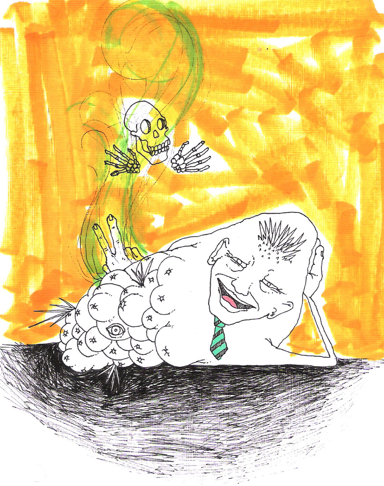

Entre piñales y sombras

|
En este apartado el lecho de la cotidianidad se traslada a la Zona Sur de Costa Rica, en Buenos Aires; tierra de piña y transnacionales, de territorios indígenas y Proyectos Hidroeléctricos. La producción piñera en Costa Rica tiene exuberantes cifras, por ejemplo, se estima que existen poco más de 50 000 hectáreas de piña sembradas en el país. Solo la Zona Sur y en más cantidad en el cantón de Buenos Aires hay poco más de 11 000 hectáreas1. Además se estima que solo en ingresos por la exportación (22% de la exportación mundial la tiene Costa Rica) de esta fruta tropical se perciben unos 600 millones de dólares2, aproximadamente unos 300 billones de colones; una suma sorprendente, pero ¿en manos de quienes queda todo ese dinero? No creo que los campesinos gocen de tantos réditos, ni tampoco las asociaciones de artesanas o la colectividad en general. Es por esta indignación que he decidido escribir, es por los ríos contaminados, las parcelas invadidas, es por el cisterna que lleva agua a El Cairo de Siquirres debido a que sus acueductos fueron contaminados por los agroquímicos de las piñeras; además es por ellos y ellas los que creen en otros mundos posibles y en un desarrollo otro. Pero este artículo no es sobre mi vida cotidiana en medio de un piñal y tampoco pretende ser autorreferencial, por el contrario es sobre una conversación que tuve con un ex trabajador piñero de la Zona Sur, su nombre es Jairo, y a sus 26 años nos cuenta su paso por PINDECO: "Me levantaba todos los días a las 3:50 [de la mañana] para alistarme y me llevaba el almuerzo y desayuno junto con el equipo de trabajo, si porque ya antitos de las 5 de la mañana ya me estaba esperando el bus que nos recogía para estar más o menos a las 5 y 20 en Puesto 1 en PINDECO, alistábamos lo que son herramientas o en veces nos daban un mapa ahí con coordenadas para ir a hacer un ensayo a la piña en alguno de los lotes que habían en Buenos Aires o en Volcán, nos hacían por grupos y nos llevaban en un carro, estábamos allá tipo 6 de la mañana, -si más o menos a esa hora- y nos colocábamos en el lote para hacerle el estudio a la piña... (...) luego nosotros teníamos que ir a ver el sabor, color y calidad de la piña... luego tal vez nos mandaban a buscar enfermedades en la piña porque es posible que se pudra si se contamina con enfermedad y luego la piña no crece bien y no se puede exportar |
porque no iba a ser selecta y diay la empresa no iba a tener ganancias. En el día desayunábamos a las 7 de la mañana, cada quien lleva su desayuno y almuerzo tipo 11 de la mañana; y ya a la 1 y media nos veníamos para Puesto 1 porque ya a las 2 salíamos. Pero en el transcurso del día era muy bochornoso porque había que estar metido en los piñales, hay hojas de piña que llegan hasta el cuello a uno, lo raspan a veces da alergia por los químicos que le echan a la piña, el sol da dolor de cabeza, ganas de vomitar, había que tener cuidado con las Terciopelos [Serpiente venenosa] por aquello de una terciopelo -y ya habían pasado varios chiles-. El trato con los compañeros eran buenos y con el jefe también, pero siempre hay gente que quiere montarse, para socarlo a uno y hacerlo trabajar de más; entonces lo que yo hacía era aunque estuviera cansado ponerle bonito y socarle para que no me dijeran nada, porque si no íbamos a pagar todos. El horario era de 5 y media a 2 de la tarde, pero lo más cansado es ir rompiendo la piña y eso golpea los muslos y las rodillas. Una vez tuve un accidente afilando un cuchillo por cierto, nos daban un overol más o menos grueso y afilando el cuchillo se me resbalo y me corte el muslo, se me salió como un tendón y tuve que venir a la clínica de Buenos Aires y me hicieron 4 puntadas; eso se me infeccionó por los químicos que traía el cuchillo porque era para cortar la raíz a la mata; ya me fui acostumbrando a esos químicos por estar en el campo... básicamente el trabajo mío era ese, Research [el departamento] buscaba enfermedades para ampliar las ganancias de la empresa. Yo volvería a trabajar ahí [PINDECO] pero en oficina y trabajar con visitas al campo de vez en cuando. Yo dejaría que en un futuro mis hijos trabajaran ahí pero no en el campo, porque en el campo es muy muy duro y cansado, todo el dia o toda una noche, con un día libre y no se puede estudiar ni surgir. DURO, esa es la palabra que define trabajar en el campo lleno de piñales." Los y las que antes murieron en medio de los bananales ahora lo hacen en los piñales.
"...los mejores artesanos del mundo,
los que fueron cosidos a balazos al cruzar la frontera,
los que murieron de paludismo
o de las picadas del escorpión o la barba amarilla
en el infierno de las bananeras..."
|